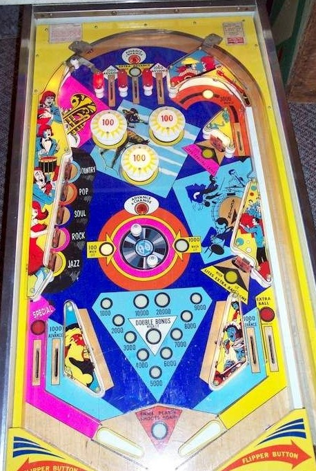

Gold Record is the 4-player version. Top Ten is the 2-player version with identical rules and scoring.
The Advance and Change buttons, located above the center top lane and above the center spinning disk, alternate whether the spinning disk is lit for 100 or 1,000 points per spin. If the disk is lit for 1,000 a spin, shoot it. Otherwise, try to press and Advance and Change button, which is done most safely by shooting up the left side of the table to get back to the top lanes. Completing the left drop targets lights the upper right and lower right standups, which can then be hit to light the out lanes for Special or extra ball- not worth any points in competition play.
The below picture of Top Ten's playfield was taken from the Internet Pinball Database, where it was originally provided by Pascal Villedieu.

All 3 top lanes score 1,000 points. The left and right lanes score 1 bonus advance. The center lane scores 3 bonus advances when lit, but does not advance the bonus if not lit. The center lane toggles being lit or not with each press of an Advance & Change button; one such button is located directly above the center top lane, and these buttons also advance the bonus.
All three pop bumpers always score 100 points.
Scores 1,000 points, or 3,000 when lit. This lane is lit when the center top lane is not lit, and vice versa.
Each target down scores 1,000 points. Knocking down all 5 targets resets them and lights the upper right and lower right standup targets. The upper right and lower right standups always score 1,000 points. When lit, hitting the upper right standup lights the left out lane for a Special, and hitting the lower right stanup lights the right out lane for extra ball.
The spinner on Gold Record is a disk set into the table with posts sticking out of it. Hitting a post with the ball causes the disk to spin freely and score points. Similar mechanisms appear on games such as 4 Aces, Triple Action, and Tales of the Arabian Nights. The spinner will either score 100 or 1,000 points per spin, and alternates between the two values anytime an Advance & Change rollover button is pressed. The second of the two Advance & Change buttons is located directly behind the spinner.
Gold Record has a conventional in/out lane setup. All in/out lanes score 1,000 points. The in lanes also advance the bonus. The left out lane can be lit for Special and the right out lane can be lit for extra ball by hitting the upper right or lower right standup targets respectively after completing the left drop targets.
Some copies of Gold Record and Top Ten appear to have a center peg between/below the flippers, while others do not. There is no kickback or gate of any kind.
Bonus is advanced 1 time by either in lane, either Advance & Change button, and the left and right top lanes. When lit, the center top lane advances the bonus 3 times. Max base bonus is 20,000 points. Double bonus is awarded for free on the final ball of the game (and any extra balls earned during the final ball of the game) and cannot be lit on any other ball.
Tilt ends the ball in play only. As far as I have found, Special and extra ball cannot be set to score points for competition/novelty play. Maximum 1 extra ball per ball in play.